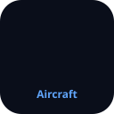
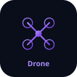
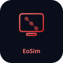

Interactive 3D simulation games ported from EoSim renderers — play in your browser, install as mobile app, or use as a browser extension.
Each game reuses the exact same 3D geometry and physics from EoSim's Python renderers
(eosim/gui/renderers/), ported to JavaScript/Canvas. ♻️ Code Reused

Fly a fixed-wing aircraft with pitch, roll, heading, airspeed, gear, and flaps. Ported from aircraft.py.
Drive a car with steering, acceleration, braking, speed-based colors, and odometer. Ported from vehicle.py.

Fly a quadrotor with roll, pitch, yaw, altitude, motor RPM visualization. Ported from drone.py.
EoSim is the multi-architecture embedded simulation platform — supporting 52+ platforms across 12 architectures with native Python simulation, QEMU, Renode, VirtualBox, VMware, Docker-like layers, and snapshots.

52+ platform definitions — ARM, RISC-V, Xtensa, x86, MIPS, PowerPC. Native + QEMU + Renode + VirtualBox + VMware engines.
Python · 12 ArchitecturesAircraft, Vehicle, Drone, Robot, Medical, Satellite, Gaming, Weather, Finance, Aerodynamics, Physiology, Consumer, Generic — all reusable.
Ported to JS for browserGPIO panel, UART terminal, CPU state, memory view, peripheral registers, 3D product viewer — Tkinter + Web.
7 Widget PanelsGenerate .vbox + .vdi for VirtualBox and .vmx + .vmdk for VMware directly from platform hardware configs.
Incremental layered VM builds — base (FROM), overlay (COPY/ADD), commit (tag), flatten (export), history — just like Docker.
eosim layer create/add/commitSave, restore, export, import VM snapshots across VirtualBox and VMware — with snapshot trees and portable .tar.gz archives.
pip install git+https://github.com/embeddedos-org/eosim.git
eosim list # 52+ platforms
eosim run stm32f4 --gui # launch simulation with GUI
eosim vbox create x86_64-linux # generate VirtualBox VM
eosim vmware create raspi4 # generate VMware VM
eosim snapshot save my-vm checkpoint1 # save snapshot
eosim layer create my-vm ./out/vbox/my-vm # create base layer
eosim layer add my-vm ./apps --name apps # add overlay layer
eosim layer commit my-vm v1.0 # tag as v1.0EoStudio is the unified cross-platform design tool suite — 12 editors, 30+ code generators, AI/LLM integration, and native EoSim plugin for hardware simulation directly from the design canvas.
3D Modeler, CAD, Image Editor, Game Editor, UI/UX, Product Design, Interior, UML, Simulation, Database, Hardware PCB, IDE.
Python · tkinter · Cross-PlatformFlutter, React Native, Electron, Tauri, React+FastAPI, Vue+Flask, Angular, Svelte, OpenSCAD, STL, Godot, Unity, EoS firmware.
Mobile · Desktop · Web · Game · FirmwareDesign Agent, Smart Chat, Text-to-UI, Text-to-3D, AI Simulator, Kids Tutor — powered by Ollama (local) or OpenAI API.
Ollama · OpenAI · GPT-4pip install -e ".[all]"
EoStudio launch # open design suite
EoStudio new --template todo-app # create from template
EoStudio codegen my-app.eostudio --framework react # generate code
EoStudio ask "Design a responsive dashboard" # AI design agent
EoStudio teach --lesson shapes # kids learning modeEoSim is available as a plugin for every platform in the EoS ecosystem — from EoStudio design tools to browser extensions, mobile apps, VSCode, JetBrains, Slack, and more.
Simulate hardware directly from the design canvas. Menu items, toolbar, status panel, 3D product viewer.
eosim_plugin.pyEoSim Play games in the eOffice Suite browser extension popup — Aircraft, Car, Drone sims.
extensions/browser/Touch-optimized sim games with D-pad controls. Installable on iOS & Android via "Add to Home Screen".
mobile-apps/eosim-play/EoSim sims render natively inside eBrowser on embedded devices, kiosks, and IoT dashboards.
eBrowser + sim-engine.jsEoSim sidebar provider, app launcher, CSV editor — integrated into VS Code.
extensions/vscode/EoSim tool window and eBot action for IntelliJ, CLion, PyCharm — simulate from your IDE.
extensions/jetbrains/Run /eosim simulate stm32f4 in Slack channels. Share results with your team.
Same eOffice Suite with EoSim Play games — works in Safari on macOS & iOS.
extensions/safari/┌─────────────────────────────────────────────────────────────┐
│ EoSim Core Engine │
│ (52+ platforms, 14 renderers, QEMU/Renode/VBox/VMware) │
├─────────────────────────────────────────────────────────────┤
│ Plugin Interfaces │
│ ┌──────────┐ ┌──────────┐ ┌──────────┐ ┌──────────┐ │
│ │ EoStudio │ │ eBrowser │ │ Chrome │ │ VSCode │ │
│ │ Plugin │ │ Native │ │Extension │ │Extension │ │
│ └────┬─────┘ └────┬─────┘ └────┬─────┘ └────┬─────┘ │
│ │ │ │ │ │
│ ┌────┴─────┐ ┌────┴─────┐ ┌────┴─────┐ ┌────┴─────┐ │
│ │ JetBrains│ │ Slack │ │ Safari │ │ Mobile │ │
│ │ Plugin │ │ Bot │ │Extension │ │ PWA │ │
│ └──────────┘ └──────────┘ └──────────┘ └──────────┘ │
├─────────────────────────────────────────────────────────────┤
│ Shared: sim-engine.js (Canvas 2D) │
│ Ported from eosim/gui/renderers/*.py (Python) │
└─────────────────────────────────────────────────────────────┘eBrowser is the EmbeddedOS lightweight web browser engine — built from scratch in C/C++ for embedded devices, kiosks, and IoT dashboards. It renders the EoSim Play games natively and powers the browser extension platform.
Lightweight HTML5/CSS3 rendering engine with DOM, layout, and networking — all under 1 MB binary.
C/C++ · LVGL · SDL2 · WASMeBrowser loads eOffice Suite extensions and EoSim Play sims as browser-native apps — same extensions run in Chrome, eBrowser, and mobile.
Same JS · Same HTMLSDL2 (desktop), EoS native (embedded framebuffer), WASM (run in any browser via Emscripten).
Cross-Platform# Linux / macOS
git clone --recursive https://github.com/embeddedos-org/eBrowser.git
cd eBrowser && ./setup.sh
# Windows
git clone --recursive https://github.com/embeddedos-org/eBrowser.git
cd eBrowser && setup.bat
# Open EoSim Play games in eBrowser
./eBrowser https://embeddedos-org.github.io/eApps/┌─────────────────────────────────────────────┐
│ Browser UI (tabs, URL bar) │
├─────────────────────────────────────────────┤
│ Core Engine (HTML / CSS / Layout / JS) │
├──────────────┬──────────────┬───────────────┤
│ Rendering │ Network │ Input │
│ (LVGL) │ (HTTP/S) │ (touch/kb) │
├──────────────┴──────────────┴───────────────┤
│ Platform Abstraction Layer (PAL) │
├─────────────────────────────────────────────┤
│ SDL2 (desktop) │ EoS (embedded) │ WASM │
└─────────────────────────────────────────────┘#include <ebrowser/ebrowser.h>
eb_config cfg = eb_config_default();
eb_instance *browser = eb_create(&cfg);
eb_navigate(browser, "https://embeddedos-org.github.io/eApps/");
eb_run(browser);
eb_destroy(browser);📖 Full eBrowser API Docs ⭐ GitHub
All releases are hosted on GitHub Releases. Pick your platform:
| Browser | Format | Download |
|---|---|---|
| Chrome / Edge / Brave | .crx | Latest .crx |
| Firefox | .xpi | Latest .xpi |
| Safari | .safariextz | Latest .safariextz |
| Opera | .nex | Latest .nex |
| Editor | Format | Download |
|---|---|---|
| VS Code | .vsix | Latest .vsix |
| JetBrains | .jar | Latest .jar |
| Obsidian | .zip | Latest .zip |
| Sublime Text | .sublime-package | Latest |
| Platform | Format | Install |
|---|---|---|
| Android (Phone/Tablet) | .apk | Settings → Unknown Sources → Install |
| Google Play (AAB) | .aab | Via Play Console upload |
| iOS | .ipa | TestFlight or Enterprise cert |
| Android TV | .apk | Sideload via ADB |
| PWA | Web | "Add to Home Screen" in browser |
| OS | Format | Apps |
|---|---|---|
| Windows x64 | .exe / .msi | eOffice, EoStudio, EoSim, eBrowser |
| macOS (Apple Silicon) | .dmg / .pkg | eOffice, EoStudio, EoSim, eBrowser |
| Linux x64 | .AppImage / .deb / .rpm | eOffice, EoStudio, EoSim, eBrowser |
| EmbeddedOS | .eapp | All 45+ native apps |
| WASM | .wasm | Web-based deployment |
| Format | Platform | Use |
|---|---|---|
.ova | VirtualBox | Import → Start |
.vmdk | VMware | Create VM → Attach disk |
.qcow2 | QEMU/KVM | qemu-system-x86_64 -hda eos.qcow2 |
.iso | Bare Metal | Flash USB → Boot |
.img | Raspberry Pi | dd if=eos.img of=/dev/sdX |
.bin | STM32/ESP32 | Flash via ST-Link / esptool |
| Platform | Format | Install |
|---|---|---|
| Slack | Bot App | Add to workspace via manifest |
| GitHub | Probot App | Install via GitHub Apps |
| Google Workspace | Apps Script | Deploy via clasp |
| Office 365 | Add-in | Sideload manifest.xml |
| Raycast | Extension | raycast import |
| Docker | .tar.gz | docker load |
# VS Code Extension
code --install-extension eoffice-vscode-0.1.0.vsix
# Chrome Extension (unpacked)
# chrome://extensions → Developer Mode → Load unpacked → extensions/browser/
# Firefox Extension
# about:addons → ⚙️ → Install from file → eoffice-firefox-0.1.0.xpi
# Android APK
adb install eride-0.1.0-release.apk
# EoS Native
eosim install eoffice-0.1.0.eapp
# Docker
docker pull ghcr.io/embeddedos-org/eosim:latestThe EoSim sims are integrated into the eOffice Suite Chrome extension. Click any sim in the extension popup to launch a full-screen interactive game tab.
eApps repochrome://extensionsextensions/browser/The same sim-engine.js powers a mobile-optimized PWA with touch D-pad controls, HUD overlay, and landscape orientation. Installable on iOS and Android.
cd eApps/mobile-apps/eosim-play
npx serve .
# Open on phone → "Add to Home Screen"| Command | Description |
|---|---|
eosim snapshot save <vm> <name> | Save a snapshot of a VirtualBox or VMware VM |
eosim snapshot restore <vm> <id> | Restore a VM to a saved snapshot state |
eosim snapshot list | List all saved snapshots |
eosim snapshot delete <vm> <id> | Delete a snapshot and its files |
eosim snapshot export <vm> <id> | Export snapshot to portable .tar.gz |
eosim snapshot import <vm> <archive> | Import snapshot from archive |
| Command | Description |
|---|---|
eosim vmware create <platform> | Create VMware .vmx + .vmdk from platform config |
eosim vmware info <platform> | Show VMware config mapping for a platform |
eosim vmware export-ova <vmx> | Export to OVA format (requires ovftool) |
| Command | Description |
|---|---|
eosim layer create <vm> <dir> | Create base layer from VM directory (like Docker FROM) |
eosim layer add <vm> <dir> | Add overlay layer on top (like Docker COPY/ADD) |
eosim layer commit <vm> <tag> | Tag current layer stack (like Docker tag/commit) |
eosim layer list | List all layers across all VMs |
eosim layer history <vm> | Show layer history (like docker history) |
eosim layer flatten <vm> | Merge all layers into single directory (like docker export) |
eosim layer images | List all VM images with layer counts and tags |
| Command | Description |
|---|---|
eosim vbox create <platform> | Create VirtualBox .vbox + .vdi from platform config |
eosim vbox list | List VirtualBox VMs (requires VBoxManage) |
eosim vbox info <platform> | Show VirtualBox config mapping for a platform |
All icons and images are hosted at:
https://embeddedos-org.github.io/eApps/icons/eosim.svg
https://embeddedos-org.github.io/eApps/icons/eosim-play.svg
https://embeddedos-org.github.io/eApps/icons/ebrowser.svg
https://embeddedos-org.github.io/eApps/icons/sim-aircraft.svg
https://embeddedos-org.github.io/eApps/icons/sim-vehicle.svg
https://embeddedos-org.github.io/eApps/icons/sim-drone.svg